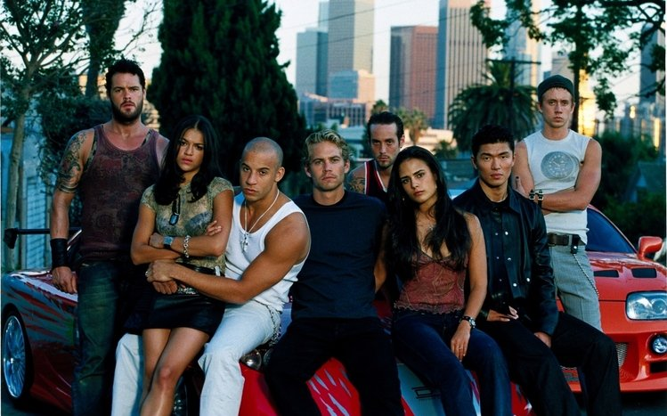
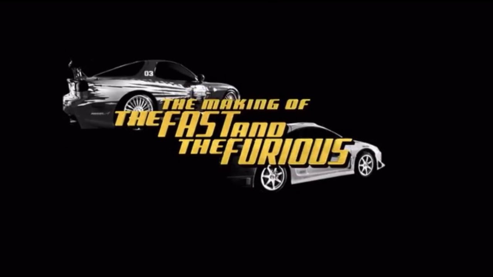
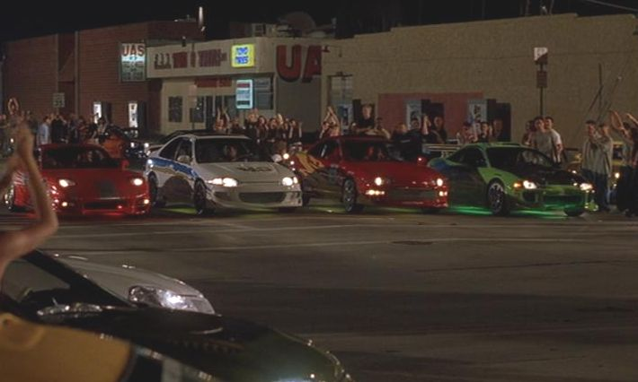
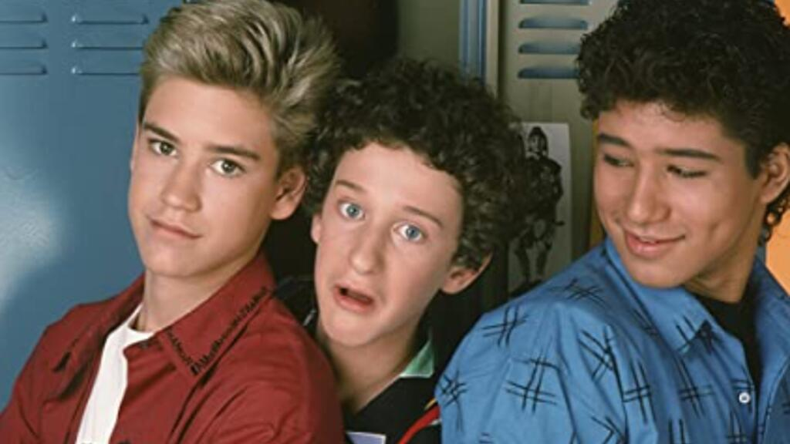
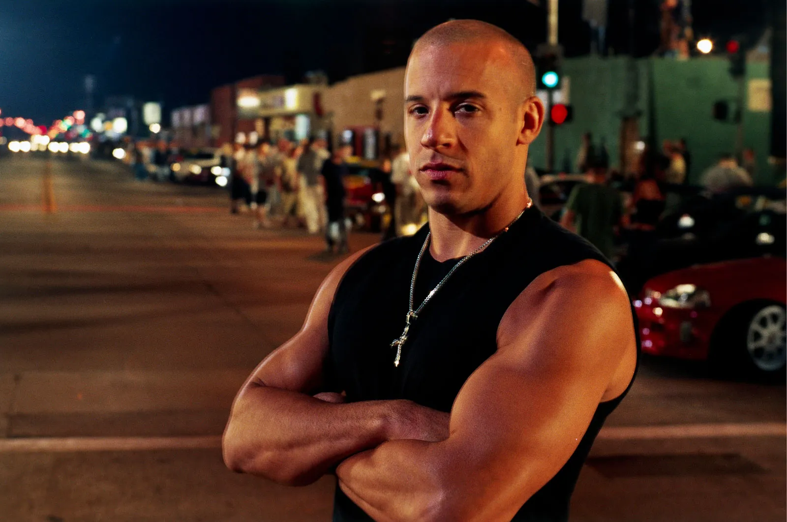
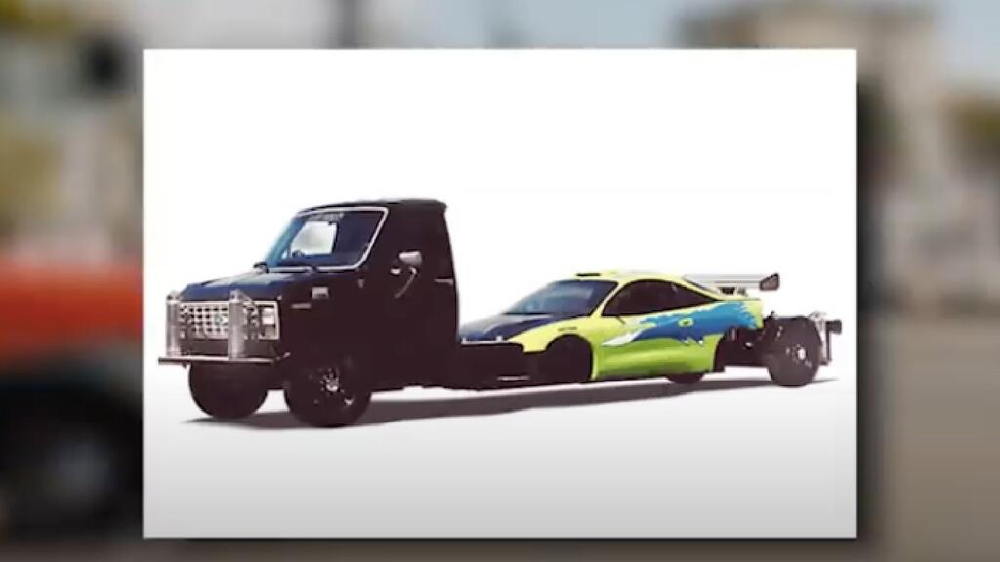
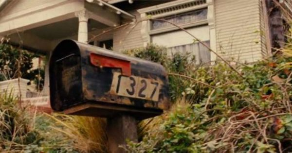

CONHEÇA ALGUMAS CURIOSIDADES SOBRE A FRANQUIA
A FRANQUIA
Uma das maiores franquias do cinema, "Velozes e Furiosos" coleciona milhões de fãs ao
redor do
mundo. Lançada em 2001, hoje, já acumula nove filmes, chegando ao topo das bilheterias a
cada
nova
produção. Com previsão de estender sua história até o 11º longa, com estreia prevista apenas
para
2024, a franquia construiu uma grande família com Vin Diesel, Michelle Rodriguez, Jordana
Brewster,
Chad Lindberg, o falecido Paul Walker, entre muitos outros atores que fizeram parte da
história.
Assim como toda boa família, juntos, o elenco já comemorou muitas conquistas, se meteu em
confusões
e desentendimentos, além de passado por muitos momentos que poucos acreditariam. Confira as
maiores
curiosidades de "Velozes e Furiosos"!

BILHETERIAS
A franquia de "Velozes e Furiosos" é um verdadeiro sucesso! Sexta maior bilheteria de todos os tempos, juntos, os filmes já arrecadaram mais de US$ 5,15 bilhões de dólares na bilheteria mundial, sendo a segunda maior franquia original do cinema. Apenas “Velozes e Furiosos 8” já foi considerado a melhor estreia de internacional de todos os tempos, arrecadando US$ 532 milhões no primeiro final de semana de exibição, tendo sido lançado simultaneamente em 64 países.OUTRO NOME?
Já imaginou se esta grande franquia tivesse outro nome? Por mais que hoje seja impossível atrelar outra palavra para definir a história de Toretto e sua família, inicialmente o primeiro filme iria se chamar "Redline", uma palavra que faz referência à velocidade máxima permitida nas corridas. No entanto, pouco antes do lançamento, os produtores voltaram atrás e definiram "Velozes e Furiosos".

ORIGEM
A ideia inicial da franquia não começou do nada. Na verdade, o primeiro filme teve inspiração em um artigo de uma revista, escrito por Ken Li e publicado em 1998. Intitulado "Racer X", o texto tratava sobre Rafael Estevez, que foi pego em corridas ilegais que ocorriam na região do Queens, em Nova Iorque, nos Estados Unidos.

OUTRO ELENCO?
Rob Cohen, diretor do longa, sonhava em pegar emprestado atores de "Uma Galera do Barulho", um programa de TV clássico dos anos 90. Inicialmente, os planos eram que Mario Lopez fosse Dominick, Mark-Paul Gosselaar como Brian e Dustin Diamond como Jesse. No entanto, o estúdio temia que apresentar atores semelhantes como o seriado de sucesso pudesse confundir o público, então Vin Diesel, Paul Walker e Chad Lindberg acabaram sendo escalados para os papéis.

VIN DIESEL DESISTIU DO FILME?
Mesmo sendo o protagonista da franquia, Dominic não apareceu no segundo filme "+ Velozes + Furiosos" (2003). Na época, sua ausência deixou muitos fãs confusos e a explicação só veio depois de muitos anos. Apenas durante a divulgação do sexto filme da franquia, Vin Diesel revelou que não participou do longa por não ter gostado do roteiro, achando fraco e recusando o papel - algo que ele se arrependeu, ao perceber que deveria ter tido uma obrigação por conta do público.

QUANTIDADE DE CARROS DESTRUIDOS
Alguns anos atrás, a seguradora britânica Insure the Gap decidiu fazer o balanço de quantos carros haviam sido destruídos na franquia de "Velozes e Furiosos", resultando em um total de 1.487. No entanto, este número não inclui os danos dos filmes lançados em 2017, 2019 e 2021. Ao fazermos uma nova conta, estima-se que foram destruídos mais de 2 mil carros ao longo de todos os filmes.
FILMAGENS EM ALTA VELOCIDADE
Já parou para se perguntar como eram feitas as filmagens em alta velocidade? Para que tudo parecesse realista, a produção do longa construiu um equipamento especial, que permitiu a gravação dos verdadeiros atores no volante dos carros a mais de 120km/h. Ele consistia em um caminhão de alta potência com um longo chassi, na qual as carrocerias dos carros podiam ser trocadas. Desta forma, um motorista dublê dirigia o caminhão, enquanto os atores ficavam atrás do volante do carro fictício.

CURIOSIDADE SOBRE O SITE
Uma curiosidade um tanto quanto interessante sobre o site é que a paleta de cores usadas no "MENU" é uma referência direta ao filme, a cor usada é #1327 e se pesquisarmos no google esses números o resultado que retornará é a casa de Dominic Toretto.
